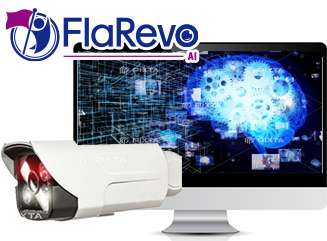

HOME
CONNECT
CLIP
AI
Nx Witness VMSについて
お問い合わせ
HOME
CONNECT
CLIP
AI
Nx Witness VMSについて
お問い合わせ
AIと映像の連動よりビジネス価値を生む
FlaRevo AI
※先行開発中
最先端AI搭載。
AIで現場を見る。

AI時代の到来で、ビジネスカメラはますます重要になっています。人の動きや、モノの動きをAIで認識したいというニーズは増えています。
FlaRevo AIは、指定ジェスチャーや指定異常行動をAIで検知し、その時点の詳細内容を確認できます。ジェスチャー検知による簡単な制御を行うことも可能です。
製造現場では、FlaRevo AIを使えば、生産性向上、効率化につながり、スマート工場化、デジタルトランスフォーメーションにつながります。
FlaRevo AIで最先端のテクノロジーと新たな価値を、お客様に提供いたします。
参考動画
1. 骨で記録する時代がやってきた
2. 骨の動きで機械を制御する
3. 見たいシーンだけをお見せします
利用シーン
CASE1
AIでジェスチャーを判断
ジェスチャーを学習させ判断し、その時点の映像を確認することが可能です。
導入シーン
ジェスチャー
製造現場では、騒音や手が塞がった状況も多いため、ジェスチャーでのAI判断は非常に役立ちます。例えば、製造開始で〇のジェスチャー、製造終了で×のジェスチャーを行うことにより、ピンポイントでの検索やアウトプットを行うことが可能です。
効果
ジェスチャーにより、映像に目印を入れることができ、素早い検索が可能になります。ジェスチャーにより、照明オン等の簡単な制御ができます。
CASE2
人やモノの動きをAIで判断
一連の動作を学習させ、異常な動きを行った場合を判断できます。
導入シーン
さぼり検知
一定の手順を学習させ、異常手順やさぼりを検知することができます。学習させた行動以外の行動を検知するため、人やモノの動きを幅広く捉えることができます。
AIの学習
学習については、検証が必要になります。行動パターンを学習し、AIが判断します。複雑な行動になればなるほど、より高度なAIが必要になります。
特長
最先端ディープラーニングで骨格検出、行動認識を判定
最先端のディープラーニングでは、高精度な骨格検出、行動認識の判定を行うことができます。
いままでできなかった人の動きやモノの動きも、判定することが可能です。
ディープラーニングで画像を判断することにより、新たなコスト削減や業務改善のチャレンジができます。
FlaRevo AIを使い、デジタルトランスフォーメーション
FlaRevo AIを使えば、映像をデータ連携させることができ、帳票連携やレポート連携ができます。
また、ジェスチャーを数値化して、さらなるAI分析を行うことも可能です。
製造現場を最先端のスマート工場にするアイテムとして、お使いいただけます。
機器構成図
提供スペック
稼働OS
Microsoft Windows 8 / 10 ( 32bit / 64bit )
CPU
Intel Core i3（第9世代）相当 以上
メモリ
8GB以上
HDD
10GB 以上の空き容量
必要ソフトウェア
Nx Witness 3.2以上
※ シーケンサおよびMX Componentは三菱電機株式会社の登録商標です。
サポート体制
あんしんのサポートセンター
各種FlaRevoのご質問およびNx Witness上のご質問を受け付ける専用のサポートセンターをご用意しております。
全国対応
国内35拠点のネットワークを活かして、全国どこでもお伺いさせていただきます。
お問い合わせ
製品に関するお問い合わせ・資料請求
メールでのお問い合わせ
お電話でのお問い合わせ
03-5396-6415
受付時間 平日10:00～17:00
（※土曜・日曜・祝祭日を除く）